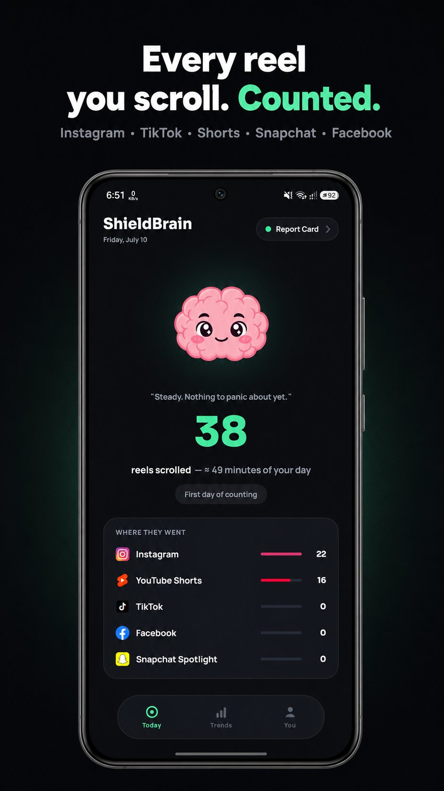
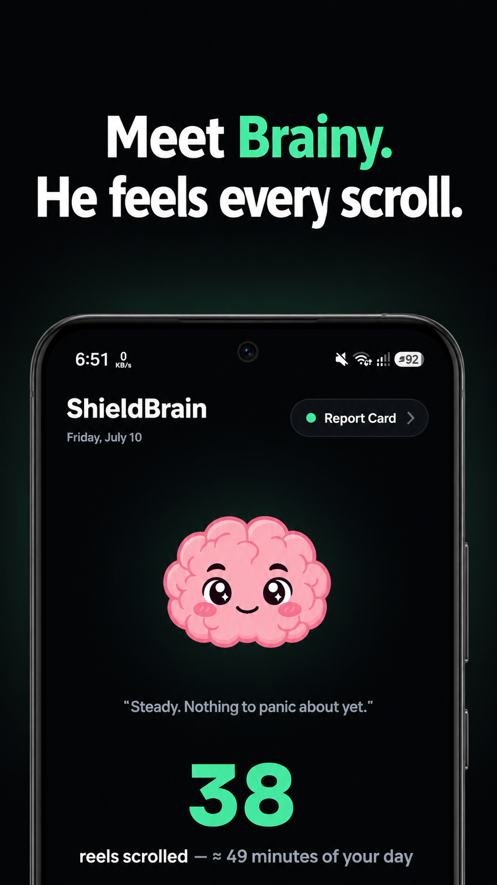
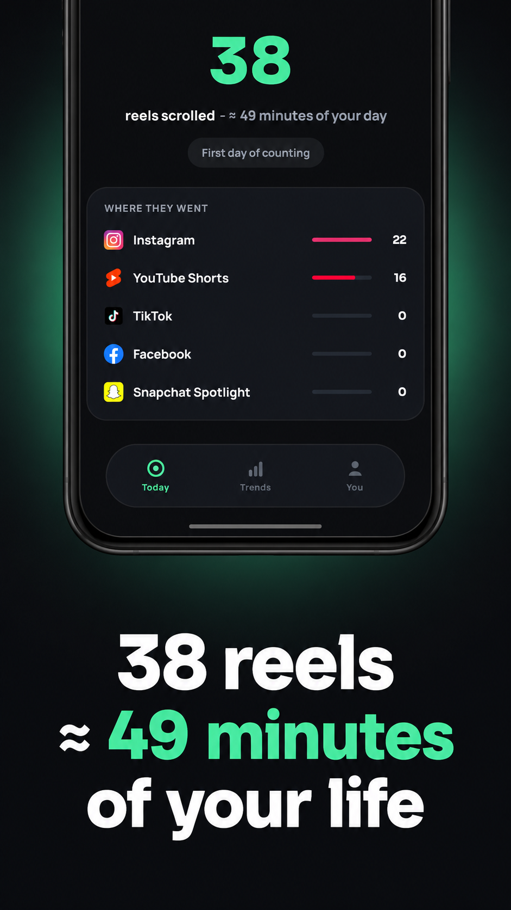
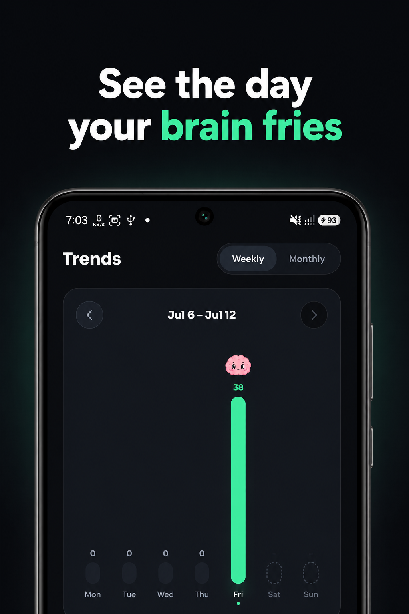
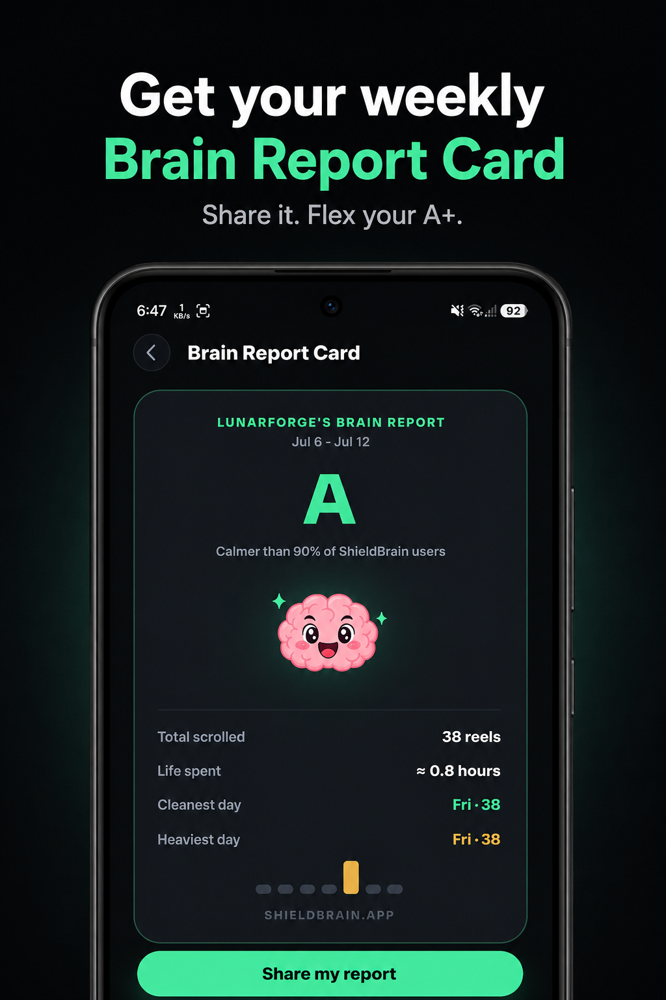
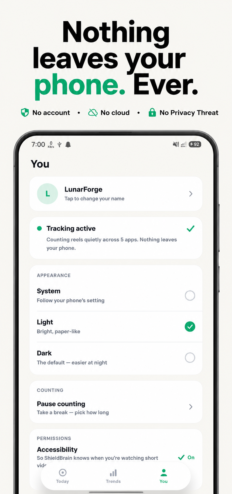

2 Months Free Trial is now available!
Count every reel you scroll.
Then block the feed.
ShieldBrain is a free reels counter and shorts blocker for Android. It shows you exactly how many Reels, Shorts and TikToks you scroll each day — then blocks the endless short-video feed on Instagram, YouTube, TikTok, Facebook and Snapchat without blocking the whole app.

What is ShieldBrain?
A reels counter and a shorts blocker. Two things, done right.
ShieldBrain is an Android digital-wellbeing app made by LunarForge Labs. It does exactly two things: it counts every short-form video (Reel, Short, TikTok, Spotlight) you scroll through, and it blocks the short-video feed on each platform when you decide you have had enough. Unlike typical app blockers, ShieldBrain never blocks the entire app — you keep your DMs, chats, stories, search and normal videos, and lose only the infinite-scroll trap.
Who it is for: students who want to study without distraction, professionals fighting doomscrolling at work, parents helping kids reduce short-video addiction, and anyone doing a dopamine detox or rebuilding their attention span.
When to use it: start by letting ShieldBrain count for a few days to see the honest number, then turn on blocking for the platforms that pull you in most. You can pause counting or unblock any platform at any time — your rules, your control.
Features
See the truth. Then stop the scroll.
You can't fix what you don't measure. ShieldBrain measures first — then gives you a one-tap way out.
Live reels counter
A silent, automatic count of every Reel, Short and TikTok you watch today — plus lifetime totals and the estimated time it cost you. The moment you see "482 reels today", something changes.
How many reels do you watch? →Feed blocker, not app blocker
Block YouTube Shorts, Instagram Reels, TikTok scrolling, Facebook Reels and Snapchat Spotlight instantly — while DMs, stories and normal videos keep working.
How feed blocking works →Per-app breakdown
"Where they went" shows exactly which app pulls you in — Instagram, YouTube, TikTok, Facebook or Snapchat — so you know which feed to block first.
Weekly & monthly trends
A weekly chart and a monthly calendar show your scrolling history at a glance — and the day your brain fries. Watch the bars shrink as you take back control.
Brain Report Card
Every week, Brainy grades your scrolling from A+ down. See your total scrolled, time spent, cleanest and heaviest day — and share your grade with friends.
100% private
No account. No cloud. No ads. Nothing leaves your phone, ever. The Accessibility Service is used only to detect short-video feeds and count scrolls.
Supported platforms
Block the feed on all five short-video platforms
Turn any platform on or off with a single tap. Each guide below shows exactly how it works.
Block YouTube Shorts
Remove the Shorts feed while keeping normal YouTube videos, subscriptions and search.
How to block YouTube Shorts →Block Instagram Reels
Stop the Reels feed without deleting Instagram. DMs, stories and your normal feed stay.
How to block Instagram Reels →Block TikTok scrolling
Break the endless For You scroll without uninstalling TikTok completely.
How to block TikTok scrolling →Block Facebook Reels
Cut the Reels feed out of Facebook while keeping groups, marketplace and messages.
How to block Facebook Reels →Block Snapchat Spotlight
Keep chatting with friends on Snapchat — without falling into the Spotlight feed.
How to block Spotlight →All of them at once
Doing a full reset? Turn on blocking for all five platforms and go cold turkey on short-form video.
How to stop doomscrolling →How it works
From install to focus in three steps
-
Install ShieldBrain
Download ShieldBrain free from Google Play. No account, no sign-up — it works immediately.
-
Enable the Accessibility Service
One-time Android permission that lets ShieldBrain detect Reels, Shorts and TikTok feeds so it can count and block them. Used for nothing else — nothing leaves your phone.
-
Watch the counter drop
See your honest daily number, then flip the block toggle for the platforms that steal your time. Your focus comes back.
Screenshots
Inside ShieldBrain
Meet Brainy — he feels every scroll.







Benefits
What you get back when the scroll stops
Reels, Shorts and TikToks are engineered to hijack your dopamine. A "5-minute break" becomes hours of doomscrolling. Here's what changes when it stops.
Save 1–3 hours a day
The average heavy scroller loses hours daily. 38 reels alone ≈ 49 minutes. Get that time back for things you actually care about.
Rebuild attention span
Short-form video trains your brain to expect a new hit every few seconds. Removing the feed lets deep focus recover.
Sleep better
No more 1 a.m. doomscrolling. Block the feeds and midnight sessions simply can't happen.
Read, study, finish tasks
Students and professionals report finally finishing what they start once the scroll trap is gone.
Break the addiction loop
Measurement plus friction is how habits break: see the number, block the feed, watch the count drop.
Stay connected
You never lose DMs, chats, stories or normal videos. You quit the algorithm, not your friends.
Why ShieldBrain
Smarter than deleting the app
Most solutions force an all-or-nothing choice. ShieldBrain removes only the part that harms you.
| Approach | Stops Reels/Shorts | Keeps DMs & stories | Shows how much you scroll | Effort to maintain |
|---|---|---|---|---|
| ShieldBrain | ✔ Feed-level block | ✔ Yes | ✔ Counts every reel | One tap per platform |
| Deleting Instagram / TikTok | ✔ | ✘ You lose everything | ✘ No | High — most people reinstall |
| Generic app blockers | ✘ Blocks whole app or nothing | ✘ Blocked too | ✘ Screen time only | Schedules and rules to manage |
| Willpower alone | ✘ The algorithm wins | ✔ | ✘ You underestimate it | Constant |
Guides
Learn how to take back your attention
Practical, step-by-step guides on blocking short-form video and fixing doomscrolling — with or without ShieldBrain.
How to stop doomscrolling
Why your brain can't stop, and the 5 steps that actually work.
Block YouTube Shorts
Every way to remove Shorts from YouTube on Android.
Block Instagram Reels
Stop Reels without deleting Instagram or losing DMs.
Block TikTok scrolling
Limit or block the For You feed without uninstalling.
How many reels do you watch?
Why counting your scrolls is the first step to quitting.
Dopamine detox guide
A realistic 7-day reset from short-form video.
FAQ
Frequently asked questions
What is ShieldBrain?
ShieldBrain is a free Android app that counts how many Reels, Shorts and TikToks you scroll through each day, and blocks the short-video feed on Instagram, YouTube, TikTok, Facebook and Snapchat. It blocks only the addictive feed — DMs, stories, search and normal videos keep working.
Does ShieldBrain block the whole app?
No. ShieldBrain blocks only the short-video surface: the Reels feed on Instagram and Facebook, the Shorts feed on YouTube, the endless scroll on TikTok, and Spotlight on Snapchat. Everything else works normally.
Which platforms does ShieldBrain support?
Five platforms: Instagram Reels, YouTube Shorts, TikTok, Facebook Reels and Snapchat Spotlight. Each can be toggled on or off individually with one tap.
Is ShieldBrain private? Does it collect my data?
ShieldBrain runs 100% on your device. No account, no sign-up, no cloud, no ads. It does not collect, store, sell or transmit any personal data.
Why does ShieldBrain need the Accessibility Service?
Android's Accessibility Service is the only reliable way for an app to detect when a short-video feed is on screen. ShieldBrain uses it solely to recognise Reels/Shorts/TikTok feeds, count scrolls and show the block screen. Nothing leaves your phone.
Is ShieldBrain available on iPhone (iOS)?
No — ShieldBrain is Android-only, because it relies on Android's Accessibility Service to detect and block short-video feeds.
When does ShieldBrain launch?
ShieldBrain is currently in closed testing and launches publicly on Google Play in late July 2026.
How much time can ShieldBrain save me?
Heavy short-video users typically spend 1–3 hours a day scrolling — in the app's own units, 38 reels ≈ 49 minutes. Counting shows the real number; blocking gives the time back.
Stop scrolling. Start living.
Shield your brain from the algorithms built to steal your attention. Free, private, and coming to Google Play in late July 2026.
Get ShieldBrain for Android